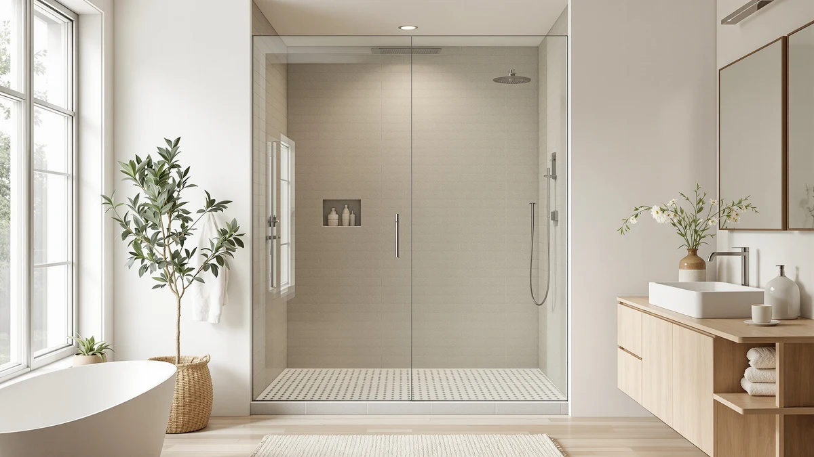

Things to Know Before You Buy
- Measure your opening first. Sliding (bypass) doors are sized for wider alcoves, usually 44 to 60 inches. Pivot doors suit narrower single openings, typically 22 to 36 inches. The width you have to work with often decides this for you.
- Check your swing clearance. A pivot door needs clear floor space to swing outward. If a toilet, vanity, or wall sits inside that arc, a sliding door that moves along a track is the safer call.
- Think about cleaning. Sliding doors ride on a bottom track that collects water, soap scum, and grime. Pivot doors have no bottom track, so there is less to scrub, but water can drip off the door as it swings open.
- Framed vs frameless. Both styles come in framed (cheaper, more support) and frameless (thicker tempered glass, cleaner look, higher price). Frameless costs more in either configuration.
- The door is usually all you get. Most enclosures and doors here ship as glass and hardware only. The shower base, faucet, and valve are sold separately, so budget for those too.
Standing in the shower-door aisle, the choice comes down to how the glass moves: a sliding door glides sideways along a track, while a pivot door swings open on a hinge like a regular door. It sounds like a small detail, but it shapes how your bathroom feels, how much floor space you need, and how much time you spend cleaning. Pick the wrong one and you end up with a door that bangs into the toilet or an opening that is too narrow to step through comfortably.
The good news is that neither style is better in a vacuum. Sliding doors are built for tight, wide spaces like tub-to-shower conversions and alcoves. Pivot doors shine in a dedicated stall where you have room to swing and want a wide, open entry. Below we break down what each one actually does well, where each falls short, and which situations point clearly to one or the other.
Quick Answer
Choose a sliding (bypass) door if your shower is a wide alcove or a tub conversion, or if furniture and fixtures crowd the floor. It needs zero swing clearance. Choose a pivot (hinged) door if you have a dedicated stall with open floor space and you want a full-width, easy-to-step-over opening with no bottom track to scrub. In short: sliding for tight and wide, pivot for open and roomy.
What is Sliding?
A sliding shower door, also called a bypass door, is made of two or more glass panels that overlap and glide past each other along a top and bottom track. Nothing swings out, so the door stays entirely within the footprint of the shower. That is its defining strength: you can install one in a narrow bathroom where an outward-swinging door would be impossible.
This makes sliding doors the default choice for alcove showers and for tub-to-shower conversions, where the opening is wide but the room in front of it is limited. Because the panels ride on a track, the mechanism is simple and forgiving of slightly out-of-square walls. Framed sliding doors are among the most affordable enclosures you can buy, and frameless versions with soft-close rollers, like our top pick from WOODBRIDGE, add a premium glide and heavier glass.
The trade-offs are real, though. Because one panel always sits behind another, the actual opening you step through is only about half the total width of the enclosure. And the bottom track, the channel the panels slide in, collects standing water, soap scum, and grime that you have to clean out regularly. If a spotless, wide-open entry is your priority, that track is the sliding door's main weakness.
What is Pivot Shower Doors?
A pivot shower door, sometimes called a hinged door, is a single panel of tempered glass that swings open on a hinge or pivot point, much like a standard interior door. When you open it, the entire width of the doorway is clear, which makes stepping in and out feel roomy and unobstructed, closer to a walk-in shower than a boxed-in stall.
Pivot doors are typically used on narrower, single openings rather than wide alcoves, so they are a natural fit for a dedicated shower stall. Frameless pivot models, like the budget-friendly Frameless Pivot door and the ACE DECOR in brushed nickel below, use thick tempered glass and minimal hardware for a clean, modern look that many people find more luxurious than a framed slider. Crucially, there is no bottom track, so there is far less to clean and nothing to trip over on the way in.
The catch is clearance. A pivot door has to swing somewhere, and that arc needs to stay clear. If your toilet, vanity, or a wall sits within the door's path, a pivot simply will not work, or it will only open partway. Water can also drip off the leading edge of the door onto the bathroom floor when you open it wet. Pivot doors reward bathrooms that have the floor space to give them.
Head-to-Head: Build Quality & Durability
Both styles are built from tempered safety glass and come in framed or frameless configurations, so raw durability is more about the specific product than the door type. That said, the mechanisms differ. Sliding doors depend on rollers and a track; better models use sealed, adjustable rollers (and soft-close dampers on premium units) that glide smoothly for years, while cheap rollers can stick or jump over time. The bottom track also needs to drain properly, or standing water shortens the life of the seals.
Pivot doors have fewer moving parts. A quality hinge or pivot pin is a simple, robust mechanism with little to wear out, which is a genuine longevity advantage. The main stress point is the hinge hardware carrying the full weight of a single heavy glass panel, so look for solid metal hinges rather than lightweight ones. Frameless versions of either style use thicker glass (often 3/8 inch) that feels more substantial than the 1/4 inch glass common in framed doors. Neither type is inherently more durable; buy on hardware quality and glass thickness rather than on the open-and-close style.
Head-to-Head: Price & Value
Price overlaps heavily between the two styles, and configuration matters more than type. Framed sliding doors are often the cheapest way to enclose a wide alcove, which is part of why they are so common in tub conversions. Frameless sliding doors with heavy glass and soft-close hardware sit at the top of the range, our WOODBRIDGE pick runs about $615, because you are paying for both the wider span of glass and the premium rollers.
Pivot doors cover a broad band too. A frameless pivot for a single opening can be surprisingly affordable, the Frameless Pivot door below is around $285, since it uses one panel and less hardware than a multi-panel slider. Mid-range frameless pivots like the ACE DECOR land near $350. As a rule, for a wide opening a framed slider is usually the value winner, while for a narrow single stall a frameless pivot often costs less than a comparable slider and looks more upscale. Remember that on enclosures the base and faucet are separate, so factor those into the total.
Head-to-Head: Use Experience
Day to day, the difference you notice most is the opening. A pivot door gives you the full width to step through, which feels open and is easier to enter and exit, especially helpful if mobility is a consideration or you are lifting a child in and out. A sliding door only ever opens to about half its width, so the entry is narrower and you sometimes have to shimmy past the fixed panel.
Cleaning tips the other way. The sliding door's bottom track is the single most-complained-about maintenance chore in this category: water pools in it and soap scum builds up, and it takes real effort to keep clean. Pivot doors have no track to scrub, so upkeep is simpler, though you will occasionally wipe drips off the floor where the door swings open. Space is the final factor: sliding doors intrude on nothing because they never leave the shower footprint, while pivot doors claim a patch of floor for their swing. If your bathroom is tight, the slider wins on livability despite the track; if it is roomy, the pivot's wide, low-maintenance entry is hard to beat.
When to Choose Sliding
Reach for a sliding door when space is the constraint. It is the right answer if:
- You have an alcove or tub-to-shower conversion. A wide opening with limited floor in front of it is exactly what bypass doors are designed for.
- The bathroom is small or crowded. When a toilet or vanity sits close to the shower, a door that never swings out avoids collisions entirely.
- You want the lowest cost on a wide opening. Framed sliders are among the most affordable ways to enclose a span of 48 to 60 inches.
- You do not mind cleaning a track. If a few minutes of track maintenance is an acceptable trade for space savings, the slider is the practical pick.
When to Choose Pivot Shower Doors
Choose a pivot door when you have the room to let it swing and want a more open feel. It is the better choice if:
- You have a dedicated shower stall with clear floor space. A pivot needs an unobstructed arc, and a standalone stall usually provides it.
- Your opening is narrow (roughly 22 to 36 inches). Single-panel pivot doors are built for these sizes, where a slider would be cramped or unavailable.
- You want a wide, easy entry. The full-width opening is easier to step over and feels more like a walk-in shower.
- You hate cleaning tracks. With no bottom track, upkeep is simpler and the frameless look stays cleaner.
Our Top Picks
Whichever direction you lean, here are three doors we would actually buy. Our top overall is a frameless sliding door for wide alcoves, followed by two frameless pivot picks that prove a single-panel swing door can be both affordable and upscale.

Editor’s Pick
Woodbridge 57.5-60" Wx76 H Soft
The sliding champion. Heavy frameless glass and genuine soft-close rollers make this WOODBRIDGE glide shut quietly instead of slamming, and it fits wide 57.5 to 60 inch alcoves. The premium price buys the best sliding experience here.
$615.12
Check Price on Amazon
Best Value
Frameless Pivot Shower Door 33-34"
The value pivot. A frameless single-panel swing door for 33 to 34 inch openings at a price well below most sliders. You get the full-width, track-free entry and clean frameless look without the premium tier cost.
$284.99
Check Price on Amazon
Premium Choice
ACE DECOR 32-36" x 72"
Also great in pivot. The ACE DECOR fits a flexible 32 to 36 inch opening and adds a brushed-nickel finish that dresses up a stall. A step up from the budget pivot for anyone who wants the finish to match their fixtures.
$349.99
Check Price on AmazonFrequently Asked Questions
Which is better for a small bathroom, sliding or pivot?
A sliding door is usually better for a small bathroom because it never swings outward. The panels glide along a track and stay entirely within the shower footprint, so there is no risk of hitting a toilet, vanity, or wall. Pivot doors need clear floor space to open, which small bathrooms often cannot spare.
Do pivot shower doors leak more than sliding doors?
Neither style is inherently leakier; a properly installed door of either type seals well with magnetic strips and seals along the edges. The practical difference is that a pivot door can drip water onto the bathroom floor when you swing it open while wet, whereas a sliding door contains water but relies on a bottom track that must drain properly to avoid pooling.
Are sliding shower doors harder to clean than pivot doors?
Generally yes. Sliding doors have a bottom track where water, soap scum, and grime collect, and that channel takes real effort to keep clean. Pivot doors have no bottom track, so there is less to scrub, though you may occasionally wipe drips off the floor where the door swings open.
Final Verdict
There is no universal winner here, only the right door for your bathroom. If your shower is a wide alcove or a tub-to-shower conversion, or if the floor in front of it is crowded, a sliding door is the clear, space-saving choice, and a frameless soft-close model like the WOODBRIDGE removes most of the compromise. If you have a dedicated stall with room to swing and you want a wider, cleaner, track-free opening that feels more open, a pivot door wins, with the Frameless Pivot delivering that at a low price and the ACE DECOR adding a finish upgrade. Measure your opening, check your swing clearance, and decide how much you care about cleaning a track. That trio of answers will tell you which door to buy.